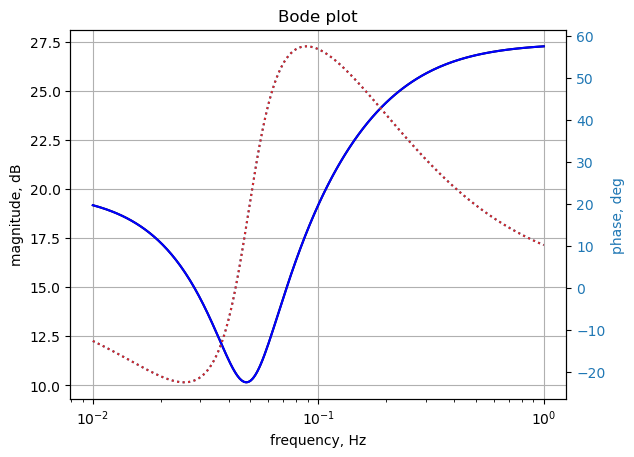

import os
from sympy import *
import numpy as np
from scipy import signal
import matplotlib.pyplot as plt
init_printing()9 test_5
This test circuit is simular to test 4, but with the addition of inductors and capacitors. This circuit has 26 branches, 13 nodes, 18 passive components, including 2 inductors, 3 independednt voltage sources and 1 independent current sources.

* test_5.asc
V4 1 2 AC 20
I2 3 4 5
F1 5 9 V1 5
E1 12 3 10 1 3
G1 7 10 9 4 2
H1 2 12 V2 2
R3 5 1 10
R4 3 7 1
R9 4 8 9
R10 8 0 10
R13 9 11 7
R14 10 9 10
R2 3 5 5
R7 8 7 6
R11 10 9 5
R12 0 10 9
R16 12 11 10
R8 3 8 5
R17 2 6 8
V1 6 3 0
V2 13 5 0
R18 12 13 4
C1 7 1 2
C2 1 9 5
L1 1 5 3 Rser=0
L2 0 11 8 Rser=0
;op
.ac dec 100 .01 1
.backanno
.end
This is the modified net list, V4 line was changed. The lines for the inductors were also changed.
* test_5.asc
V4 1 2 20
I2 3 4 5
F1 5 9 V1 5
E1 12 3 10 1 3
G1 7 10 9 4 2
H1 2 12 V2 2
R3 5 1 10
R4 3 7 1
R9 4 8 9
R10 8 0 10
R13 9 11 7
R14 10 9 10
R2 3 5 5
R7 8 7 6
R11 10 9 5
R12 0 10 9
R16 12 11 10
R8 3 8 5
R17 2 6 8
V1 6 3 0
V2 13 5 0
R18 12 13 4
C1 7 1 2
C2 1 9 5
L1 1 5 3
L2 0 11 8
;op
.ac dec 100 .01 10
.backanno
.endThis netlist is read into the Symbolic Modified Nodal Analysis Jupyter notebook and the following circuit equations were generated.
⎛ 1 ⎞ v₅
-C₁⋅s⋅v₇ - C₂⋅s⋅v₉ + I_L1 + I_V4 + v₁⋅⎜C₁⋅s + C₂⋅s + ──⎟ - ── = 0
⎝ R₃⎠ R₃
v₂ v₆
I_H1 - I_V4 + ─── - ─── = 0
R₁₇ R₁₇
⎛1 1 1 ⎞ v₈ v₇ v₅
-I_Ea1 - I_V1 + v₃⋅⎜── + ── + ──⎟ - ── - ── - ── = -I₂
⎝R₈ R₄ R₂⎠ R₈ R₄ R₂
v₄ v₈
── - ── = I₂
R₉ R₉
⎛1 1 ⎞ v₁ v₃
I_F1 - I_L1 - I_V2 + v₅⋅⎜── + ──⎟ - ── - ── = 0
⎝R₃ R₂⎠ R₃ R₂
v₂ v₆
I_V1 - ─── + ─── = 0
R₁₇ R₁₇
⎛ 1 1 ⎞ v₈ v₃
-C₁⋅s⋅v₁ - g₁⋅v₄ + g₁⋅v₉ + v₇⋅⎜C₁⋅s + ── + ──⎟ - ── - ── = 0
⎝ R₇ R₄⎠ R₇ R₄
⎛1 1 1 1 ⎞ v₄ v₃ v₇
v₈⋅⎜── + ── + ── + ───⎟ - ── - ── - ── = 0
⎝R₉ R₈ R₇ R₁₀⎠ R₉ R₈ R₇
⎛ 1 1 ⎞ ⎛ 1 1 1 ⎞ v₁₁
-C₂⋅s⋅v₁ - I_F1 + v₁₀⋅⎜- ─── - ───⎟ + v₉⋅⎜C₂⋅s + ─── + ─── + ───⎟ - ─── = 0
⎝ R₁₄ R₁₁⎠ ⎝ R₁₄ R₁₃ R₁₁⎠ R₁₃
⎛ 1 1 1 ⎞ ⎛ 1 1 ⎞
g₁⋅v₄ + v₁₀⋅⎜─── + ─── + ───⎟ + v₉⋅⎜-g₁ - ─── - ───⎟ = 0
⎝R₁₄ R₁₂ R₁₁⎠ ⎝ R₁₄ R₁₁⎠
⎛ 1 1 ⎞ v₁₂ v₉
-I_L2 + v₁₁⋅⎜─── + ───⎟ - ─── - ─── = 0
⎝R₁₆ R₁₃⎠ R₁₆ R₁₃
⎛ 1 1 ⎞ v₁₃ v₁₁
I_Ea1 - I_H1 + v₁₂⋅⎜─── + ───⎟ - ─── - ─── = 0
⎝R₁₈ R₁₆⎠ R₁₈ R₁₆
v₁₂ v₁₃
I_V2 - ─── + ─── = 0
R₁₈ R₁₈
v₁ - v₂ = V₄
I_F1 - I_V1⋅f₁ = V₁
ea₁⋅v₁ - ea₁⋅v₁₀ + v₁₂ - v₃ = V₂
-I_V2⋅h₁ - v₁₂ + v₂ = 0
-v₃ + v₆ = 0
v₁₃ - v₅ = 0
-I_L1⋅L₁⋅s + v₁ - v₅ = 0
-I_L2⋅L₂⋅s - v₁₁ = 0Copy the text strings generated by the Symbolic Modified Nodal Analysis Jupyter notebook to the cell below. used in nodal analysis
v11, R9, C1, s, R18, I_V1, v6, v1, g1, V1, v12, R3, V2, R11, I2, v2, C2, R12, v3, I_Ea1, R7, L1, v8, v7, f1, v10, I_H1, I_V2, R4, R8, h1, V4, R14, v5, R17, v4, I_L1, I_F1, R13, L2, v13, R10, ea1, I_L2, I_V4, R2, R16, v9 = symbols(' v11 R9 C1 s R18 I_V1 v6 v1 g1 V1 v12 R3 V2 R11 I2 v2 C2 R12 v3 I_Ea1 R7 L1 v8 v7 f1 v10 I_H1 I_V2 R4 R8 h1 V4 R14 v5 R17 v4 I_L1 I_F1 R13 L2 v13 R10 ea1 I_L2 I_V4 R2 R16 v9 ')
A = Matrix([[C1*s + C2*s + 1/R3, 0, 0, 0, -1/R3, 0, -C1*s, 0, -C2*s, 0, 0, 0, 0, 1, 0, 0, 0, 0, 0, 1, 0], [0, 1/R17, 0, 0, 0, -1/R17, 0, 0, 0, 0, 0, 0, 0, -1, 0, 0, 1, 0, 0, 0, 0], [0, 0, 1/R8 + 1/R4 + 1/R2, 0, -1/R2, 0, -1/R4, -1/R8, 0, 0, 0, 0, 0, 0, 0, -1, 0, -1, 0, 0, 0], [0, 0, 0, 1/R9, 0, 0, 0, -1/R9, 0, 0, 0, 0, 0, 0, 0, 0, 0, 0, 0, 0, 0], [-1/R3, 0, -1/R2, 0, 1/R3 + 1/R2, 0, 0, 0, 0, 0, 0, 0, 0, 0, 1, 0, 0, 0, -1, -1, 0], [0, -1/R17, 0, 0, 0, 1/R17, 0, 0, 0, 0, 0, 0, 0, 0, 0, 0, 0, 1, 0, 0, 0], [-C1*s, 0, -1/R4, -g1, 0, 0, C1*s + 1/R7 + 1/R4, -1/R7, g1, 0, 0, 0, 0, 0, 0, 0, 0, 0, 0, 0, 0], [0, 0, -1/R8, -1/R9, 0, 0, -1/R7, 1/R9 + 1/R8 + 1/R7 + 1/R10, 0, 0, 0, 0, 0, 0, 0, 0, 0, 0, 0, 0, 0], [-C2*s, 0, 0, 0, 0, 0, 0, 0, C2*s + 1/R14 + 1/R13 + 1/R11, -1/R14 - 1/R11, -1/R13, 0, 0, 0, -1, 0, 0, 0, 0, 0, 0], [0, 0, 0, g1, 0, 0, 0, 0, -g1 - 1/R14 - 1/R11, 1/R14 + 1/R12 + 1/R11, 0, 0, 0, 0, 0, 0, 0, 0, 0, 0, 0], [0, 0, 0, 0, 0, 0, 0, 0, -1/R13, 0, 1/R16 + 1/R13, -1/R16, 0, 0, 0, 0, 0, 0, 0, 0, -1], [0, 0, 0, 0, 0, 0, 0, 0, 0, 0, -1/R16, 1/R18 + 1/R16, -1/R18, 0, 0, 1, -1, 0, 0, 0, 0], [0, 0, 0, 0, 0, 0, 0, 0, 0, 0, 0, -1/R18, 1/R18, 0, 0, 0, 0, 0, 1, 0, 0], [1, -1, 0, 0, 0, 0, 0, 0, 0, 0, 0, 0, 0, 0, 0, 0, 0, 0, 0, 0, 0], [0, 0, 0, 0, 0, 0, 0, 0, 0, 0, 0, 0, 0, 0, 1, 0, 0, -f1, 0, 0, 0], [ea1, 0, -1, 0, 0, 0, 0, 0, 0, -ea1, 0, 1, 0, 0, 0, 0, 0, 0, 0, 0, 0], [0, 1, 0, 0, 0, 0, 0, 0, 0, 0, 0, -1, 0, 0, 0, 0, 0, 0, -h1, 0, 0], [0, 0, -1, 0, 0, 1, 0, 0, 0, 0, 0, 0, 0, 0, 0, 0, 0, 0, 0, 0, 0], [0, 0, 0, 0, -1, 0, 0, 0, 0, 0, 0, 0, 1, 0, 0, 0, 0, 0, 0, 0, 0], [1, 0, 0, 0, -1, 0, 0, 0, 0, 0, 0, 0, 0, 0, 0, 0, 0, 0, 0, -L1*s, 0], [0, 0, 0, 0, 0, 0, 0, 0, 0, 0, -1, 0, 0, 0, 0, 0, 0, 0, 0, 0, -L2*s]])
X = Matrix( [v1, v2, v3, v4, v5, v6, v7, v8, v9, v10, v11, v12, v13, I_V4, I_F1, I_Ea1, I_H1, I_V1, I_V2, I_L1, I_L2] )
Z = Matrix( [0, 0, -I2, I2, 0, 0, 0, 0, 0, 0, 0, 0, 0, V4, V1, V2, 0, 0, 0, 0, 0] )
equ = Eq(A*X,Z)
equ\(\displaystyle \left[\begin{matrix}- C_{1} s v_{7} - C_{2} s v_{9} + I_{L1} + I_{V4} + v_{1} \left(C_{1} s + C_{2} s + \frac{1}{R_{3}}\right) - \frac{v_{5}}{R_{3}}\\I_{H1} - I_{V4} + \frac{v_{2}}{R_{17}} - \frac{v_{6}}{R_{17}}\\- I_{Ea1} - I_{V1} + v_{3} \cdot \left(\frac{1}{R_{8}} + \frac{1}{R_{4}} + \frac{1}{R_{2}}\right) - \frac{v_{8}}{R_{8}} - \frac{v_{7}}{R_{4}} - \frac{v_{5}}{R_{2}}\\\frac{v_{4}}{R_{9}} - \frac{v_{8}}{R_{9}}\\I_{F1} - I_{L1} - I_{V2} + v_{5} \cdot \left(\frac{1}{R_{3}} + \frac{1}{R_{2}}\right) - \frac{v_{1}}{R_{3}} - \frac{v_{3}}{R_{2}}\\I_{V1} - \frac{v_{2}}{R_{17}} + \frac{v_{6}}{R_{17}}\\- C_{1} s v_{1} - g_{1} v_{4} + g_{1} v_{9} + v_{7} \left(C_{1} s + \frac{1}{R_{7}} + \frac{1}{R_{4}}\right) - \frac{v_{8}}{R_{7}} - \frac{v_{3}}{R_{4}}\\v_{8} \cdot \left(\frac{1}{R_{9}} + \frac{1}{R_{8}} + \frac{1}{R_{7}} + \frac{1}{R_{10}}\right) - \frac{v_{4}}{R_{9}} - \frac{v_{3}}{R_{8}} - \frac{v_{7}}{R_{7}}\\- C_{2} s v_{1} - I_{F1} + v_{10} \left(- \frac{1}{R_{14}} - \frac{1}{R_{11}}\right) + v_{9} \left(C_{2} s + \frac{1}{R_{14}} + \frac{1}{R_{13}} + \frac{1}{R_{11}}\right) - \frac{v_{11}}{R_{13}}\\g_{1} v_{4} + v_{10} \cdot \left(\frac{1}{R_{14}} + \frac{1}{R_{12}} + \frac{1}{R_{11}}\right) + v_{9} \left(- g_{1} - \frac{1}{R_{14}} - \frac{1}{R_{11}}\right)\\- I_{L2} + v_{11} \cdot \left(\frac{1}{R_{16}} + \frac{1}{R_{13}}\right) - \frac{v_{12}}{R_{16}} - \frac{v_{9}}{R_{13}}\\I_{Ea1} - I_{H1} + v_{12} \cdot \left(\frac{1}{R_{18}} + \frac{1}{R_{16}}\right) - \frac{v_{13}}{R_{18}} - \frac{v_{11}}{R_{16}}\\I_{V2} - \frac{v_{12}}{R_{18}} + \frac{v_{13}}{R_{18}}\\v_{1} - v_{2}\\I_{F1} - I_{V1} f_{1}\\ea_{1} v_{1} - ea_{1} v_{10} + v_{12} - v_{3}\\- I_{V2} h_{1} - v_{12} + v_{2}\\- v_{3} + v_{6}\\v_{13} - v_{5}\\- I_{L1} L_{1} s + v_{1} - v_{5}\\- I_{L2} L_{2} s - v_{11}\end{matrix}\right] = \left[\begin{matrix}0\\0\\- I_{2}\\I_{2}\\0\\0\\0\\0\\0\\0\\0\\0\\0\\V_{4}\\V_{1}\\V_{2}\\0\\0\\0\\0\\0\end{matrix}\right]\)
9.1 Numeric solution
# enter the element values, set I2=0
equ1a = equ.subs({
V4:20.000000,
I2:0.000000,
f1:5.000000,
ea1:3.000000,
g1:2.000000,
h1:2.000000,
R3:10.000000,
R4:1.000000,
R9:9.000000,
R10:10.000000,
R13:7.000000,
R14:10.000000,
R2:5.000000,
R7:6.000000,
R11:5.000000,
R12:9.000000,
R16:10.000000,
R8:5.000000,
R17:8.000000,
V1:0.000000,
V2:0.000000,
R18:4.000000,
C1:2.000000,
C2:5.000000,
L1:3.000000,
L2:8.000000})
equ1a # display the equations\(\displaystyle \left[\begin{matrix}I_{L1} + I_{V4} - 2.0 s v_{7} - 5.0 s v_{9} + v_{1} \cdot \left(7.0 s + 0.1\right) - 0.1 v_{5}\\I_{H1} - I_{V4} + 0.125 v_{2} - 0.125 v_{6}\\- I_{Ea1} - I_{V1} + 1.4 v_{3} - 0.2 v_{5} - 1.0 v_{7} - 0.2 v_{8}\\0.111111111111111 v_{4} - 0.111111111111111 v_{8}\\I_{F1} - I_{L1} - I_{V2} - 0.1 v_{1} - 0.2 v_{3} + 0.3 v_{5}\\I_{V1} - 0.125 v_{2} + 0.125 v_{6}\\- 2.0 s v_{1} - 1.0 v_{3} - 2.0 v_{4} + v_{7} \cdot \left(2.0 s + 1.16666666666667\right) - 0.166666666666667 v_{8} + 2.0 v_{9}\\- 0.2 v_{3} - 0.111111111111111 v_{4} - 0.166666666666667 v_{7} + 0.577777777777778 v_{8}\\- I_{F1} - 5.0 s v_{1} - 0.3 v_{10} - 0.142857142857143 v_{11} + v_{9} \cdot \left(5.0 s + 0.442857142857143\right)\\0.411111111111111 v_{10} + 2.0 v_{4} - 2.3 v_{9}\\- I_{L2} + 0.242857142857143 v_{11} - 0.1 v_{12} - 0.142857142857143 v_{9}\\I_{Ea1} - I_{H1} - 0.1 v_{11} + 0.35 v_{12} - 0.25 v_{13}\\I_{V2} - 0.25 v_{12} + 0.25 v_{13}\\v_{1} - v_{2}\\I_{F1} - 5.0 I_{V1}\\3.0 v_{1} - 3.0 v_{10} + v_{12} - v_{3}\\- 2.0 I_{V2} - v_{12} + v_{2}\\- v_{3} + v_{6}\\v_{13} - v_{5}\\- 3.0 I_{L1} s + v_{1} - v_{5}\\- 8.0 I_{L2} s - v_{11}\end{matrix}\right] = \left[\begin{matrix}0\\0\\0\\0\\0\\0\\0\\0\\0\\0\\0\\0\\0\\20.0\\0\\0\\0\\0\\0\\0\\0\end{matrix}\right]\)
u1 = solve(equ1a,X)
u1\(\displaystyle \left\{ I_{Ea1} : \frac{484516320.0 s^{4} - 7013459176.0 s^{3} - 14876492386.0 s^{2} - 6753210350.0 s + 701248900.0}{1387767120.0 s^{4} + 4569083244.0 s^{3} + 5198892369.0 s^{2} + 2332112265.0 s + 300180975.0}, \ I_{F1} : \frac{- 18729852000.0 s^{4} - 55151203400.0 s^{3} - 54295631150.0 s^{2} - 19257377500.0 s - 1182340000.0}{1387767120.0 s^{4} + 4569083244.0 s^{3} + 5198892369.0 s^{2} + 2332112265.0 s + 300180975.0}, \ I_{H1} : \frac{- 9813782880.0 s^{4} - 34791104416.0 s^{3} - 40120646726.0 s^{2} - 15835630125.0 s - 404170350.0}{1387767120.0 s^{4} + 4569083244.0 s^{3} + 5198892369.0 s^{2} + 2332112265.0 s + 300180975.0}, \ I_{L1} : \frac{- 10390318400.0 s^{3} - 20644756880.0 s^{2} - 9214475380.0 s + 640638350.0}{1387767120.0 s^{4} + 4569083244.0 s^{3} + 5198892369.0 s^{2} + 2332112265.0 s + 300180975.0}, \ I_{L2} : \frac{228057000.0 s^{3} + 1149868000.0 s^{2} + 1056127000.0 s + 196789500.0}{1387767120.0 s^{4} + 4569083244.0 s^{3} + 5198892369.0 s^{2} + 2332112265.0 s + 300180975.0}, \ I_{V1} : \frac{- 3745970400.0 s^{4} - 11030240680.0 s^{3} - 10859126230.0 s^{2} - 3851475500.0 s - 236468000.0}{1387767120.0 s^{4} + 4569083244.0 s^{3} + 5198892369.0 s^{2} + 2332112265.0 s + 300180975.0}, \ I_{V2} : \frac{- 9821049600.0 s^{4} - 25552655920.0 s^{3} - 21936878920.0 s^{2} - 7453388375.0 s - 1000603250.0}{1387767120.0 s^{4} + 4569083244.0 s^{3} + 5198892369.0 s^{2} + 2332112265.0 s + 300180975.0}, \ I_{V4} : \frac{- 13559753280.0 s^{4} - 45821345096.0 s^{3} - 50979772956.0 s^{2} - 19687105625.0 s - 640638350.0}{1387767120.0 s^{4} + 4569083244.0 s^{3} + 5198892369.0 s^{2} + 2332112265.0 s + 300180975.0}, \ v_{1} : \frac{1516291200.0 s^{4} + 8827515840.0 s^{3} + 18582319340.0 s^{2} + 13870838550.0 s + 2954253000.0}{1387767120.0 s^{4} + 4569083244.0 s^{3} + 5198892369.0 s^{2} + 2332112265.0 s + 300180975.0}, \ v_{10} : \frac{- 641865600.0 s^{4} - 1183785120.0 s^{3} + 1416411780.0 s^{2} + 2856387600.0 s + 996913500.0}{462589040.0 s^{4} + 1523027748.0 s^{3} + 1732964123.0 s^{2} + 777370755.0 s + 100060325.0}, \ v_{11} : \frac{- 1824456000.0 s^{4} - 9198944000.0 s^{3} - 8449016000.0 s^{2} - 1574316000.0 s}{1387767120.0 s^{4} + 4569083244.0 s^{3} + 5198892369.0 s^{2} + 2332112265.0 s + 300180975.0}, \ v_{12} : \frac{- 6596952000.0 s^{4} - 31448837200.0 s^{3} - 41521770200.0 s^{2} - 17864630000.0 s - 1048160000.0}{1387767120.0 s^{4} + 4569083244.0 s^{3} + 5198892369.0 s^{2} + 2332112265.0 s + 300180975.0}, \ v_{13} : \frac{32687246400.0 s^{4} + 70761786480.0 s^{3} + 46225745480.0 s^{2} + 11948923500.0 s + 2954253000.0}{1387767120.0 s^{4} + 4569083244.0 s^{3} + 5198892369.0 s^{2} + 2332112265.0 s + 300180975.0}, \ v_{2} : \frac{- 26239051200.0 s^{4} - 82554149040.0 s^{3} - 85395528040.0 s^{2} - 32771406750.0 s - 3049366500.0}{1387767120.0 s^{4} + 4569083244.0 s^{3} + 5198892369.0 s^{2} + 2332112265.0 s + 300180975.0}, \ v_{3} : \frac{3728712000.0 s^{4} + 5687776400.0 s^{3} + 1477481800.0 s^{2} - 1959602750.0 s - 1157622500.0}{1387767120.0 s^{4} + 4569083244.0 s^{3} + 5198892369.0 s^{2} + 2332112265.0 s + 300180975.0}, \ v_{4} : \frac{2139552000.0 s^{4} + 6226520400.0 s^{3} + 6777307400.0 s^{2} + 1039978000.0 s - 1355150000.0}{1387767120.0 s^{4} + 4569083244.0 s^{3} + 5198892369.0 s^{2} + 2332112265.0 s + 300180975.0}, \ v_{5} : \frac{32687246400.0 s^{4} + 70761786480.0 s^{3} + 46225745480.0 s^{2} + 11948923500.0 s + 2954253000.0}{1387767120.0 s^{4} + 4569083244.0 s^{3} + 5198892369.0 s^{2} + 2332112265.0 s + 300180975.0}, \ v_{6} : \frac{3728712000.0 s^{4} + 5687776400.0 s^{3} + 1477481800.0 s^{2} - 1959602750.0 s - 1157622500.0}{1387767120.0 s^{4} + 4569083244.0 s^{3} + 5198892369.0 s^{2} + 2332112265.0 s + 300180975.0}, \ v_{7} : \frac{1516291200.0 s^{4} + 10608925440.0 s^{3} + 17203482560.0 s^{2} + 5263461700.0 s - 2405273000.0}{1387767120.0 s^{4} + 4569083244.0 s^{3} + 5198892369.0 s^{2} + 2332112265.0 s + 300180975.0}, \ v_{8} : \frac{2139552000.0 s^{4} + 6226520400.0 s^{3} + 6777307400.0 s^{2} + 1039978000.0 s - 1355150000.0}{1387767120.0 s^{4} + 4569083244.0 s^{3} + 5198892369.0 s^{2} + 2332112265.0 s + 300180975.0}, \ v_{9} : \frac{1516291200.0 s^{4} + 4779582240.0 s^{3} + 6652835940.0 s^{2} + 2436014800.0 s - 643814500.0}{1387767120.0 s^{4} + 4569083244.0 s^{3} + 5198892369.0 s^{2} + 2332112265.0 s + 300180975.0}\right\}\)
9.2 AC analysis
Solve equations for \(\omega\) equal to 1 radian per second, s = 1j.
equ1a_1rad_per_s = equ1a.subs({s:1j})
equ1a_1rad_per_s # display the equations\(\displaystyle \left[\begin{matrix}I_{L1} + I_{V4} + v_{1} \cdot \left(0.1 + 7.0 i\right) - 0.1 v_{5} - 2.0 i v_{7} - 5.0 i v_{9}\\I_{H1} - I_{V4} + 0.125 v_{2} - 0.125 v_{6}\\- I_{Ea1} - I_{V1} + 1.4 v_{3} - 0.2 v_{5} - 1.0 v_{7} - 0.2 v_{8}\\0.111111111111111 v_{4} - 0.111111111111111 v_{8}\\I_{F1} - I_{L1} - I_{V2} - 0.1 v_{1} - 0.2 v_{3} + 0.3 v_{5}\\I_{V1} - 0.125 v_{2} + 0.125 v_{6}\\- 2.0 i v_{1} - 1.0 v_{3} - 2.0 v_{4} + v_{7} \cdot \left(1.16666666666667 + 2.0 i\right) - 0.166666666666667 v_{8} + 2.0 v_{9}\\- 0.2 v_{3} - 0.111111111111111 v_{4} - 0.166666666666667 v_{7} + 0.577777777777778 v_{8}\\- I_{F1} - 5.0 i v_{1} - 0.3 v_{10} - 0.142857142857143 v_{11} + v_{9} \cdot \left(0.442857142857143 + 5.0 i\right)\\0.411111111111111 v_{10} + 2.0 v_{4} - 2.3 v_{9}\\- I_{L2} + 0.242857142857143 v_{11} - 0.1 v_{12} - 0.142857142857143 v_{9}\\I_{Ea1} - I_{H1} - 0.1 v_{11} + 0.35 v_{12} - 0.25 v_{13}\\I_{V2} - 0.25 v_{12} + 0.25 v_{13}\\v_{1} - v_{2}\\I_{F1} - 5.0 I_{V1}\\3.0 v_{1} - 3.0 v_{10} + v_{12} - v_{3}\\- 2.0 I_{V2} - v_{12} + v_{2}\\- v_{3} + v_{6}\\v_{13} - v_{5}\\- 3.0 i I_{L1} + v_{1} - v_{5}\\- 8.0 i I_{L2} - v_{11}\end{matrix}\right] = \left[\begin{matrix}0\\0\\0\\0\\0\\0\\0\\0\\0\\0\\0\\0\\0\\20.0\\0\\0\\0\\0\\0\\0\\0\end{matrix}\right]\)
ans1 = solve(equ1a_1rad_per_s,X)
ans1\(\displaystyle \left\{ I_{Ea1} : -3.28755526738118 + 2.02051537859022 i, \ I_{F1} : -11.5985498010872 - 2.83348461841226 i, \ I_{H1} : -8.50450073009283 + 0.0196092639839988 i, \ I_{L1} : -4.46386215504314 + 2.50920732075621 i, \ I_{L2} : 0.086195653296013 - 0.290772822143382 i, \ I_{V1} : -2.31970996021745 - 0.566696923682452 i, \ I_{V2} : -4.58793699371144 - 2.23193107752157 i, \ I_{V4} : -10.8242106903103 - 0.547087659698453 i, \ v_{1} : 2.20785874542791 - 2.84317775225776 i, \ v_{10} : -0.919409819344333 - 2.86641549706325 i, \ v_{11} : -2.32618257714705 - 0.689565226368104 i, \ v_{12} : -8.61626726714921 + 1.62068440278538 i, \ v_{13} : 9.73548070769654 + 10.5484087128717 i, \ v_{2} : -17.7921412545721 - 2.84317775225776 i, \ v_{3} : 0.765538427167506 + 1.69039763720186 i, \ v_{4} : 1.88352299889828 + 0.277177886414242 i, \ v_{5} : 9.73548070769654 + 10.5484087128717 i, \ v_{6} : 0.765538427167506 + 1.69039763720186 i, \ v_{7} : 4.35521828431417 - 1.25237908268235 i, \ v_{8} : 1.88352299889828 + 0.277177886414242 i, \ v_{9} : 1.47350713278237 - 0.271330211771869 i\right\}\)
for name, value in ans1.items():
print('{:5s}: mag: {:10.6f} phase: {:11.5f} deg'.format(str(name),float(abs(value)),float(arg(value)*180/np.pi)))v1 : mag: 3.599764 phase: -52.16901 deg
v2 : mag: 18.017879 phase: -170.92092 deg
v3 : mag: 1.855665 phase: 65.63543 deg
v4 : mag: 1.903808 phase: 8.37152 deg
v5 : mag: 14.354390 phase: 47.29504 deg
v6 : mag: 1.855665 phase: 65.63543 deg
v7 : mag: 4.531708 phase: -16.04303 deg
v8 : mag: 1.903808 phase: 8.37152 deg
v9 : mag: 1.498280 phase: -10.43351 deg
v10 : mag: 3.010258 phase: -107.78377 deg
v11 : mag: 2.426237 phase: -163.48826 deg
v12 : mag: 8.767364 phase: 169.34737 deg
v13 : mag: 14.354390 phase: 47.29504 deg
I_V4 : mag: 10.838028 phase: -177.10656 deg
I_F1 : mag: 11.939640 phase: -166.27173 deg
I_Ea1: mag: 3.858821 phase: 148.42532 deg
I_H1 : mag: 8.504523 phase: 179.86789 deg
I_V1 : mag: 2.387928 phase: -166.27173 deg
I_V2 : mag: 5.102027 phase: -154.05809 deg
I_L1 : mag: 5.120760 phase: 150.65897 deg
I_L2 : mag: 0.303280 phase: -73.48826 degThe following results were obtained from LTSpice.
--- AC Analysis ---
frequency: 0.159155 Hz
V(1): mag: 3.59976 phase: -52.169° voltage
V(2): mag: 18.0179 phase: -170.921° voltage
V(3): mag: 1.85567 phase: 65.6354° voltage
V(4): mag: 1.90381 phase: 8.37152° voltage
V(5): mag: 14.3544 phase: 47.295° voltage
V(9): mag: 1.49828 phase: -10.4335° voltage
V(12): mag: 8.76736 phase: 169.347° voltage
V(10): mag: 3.01026 phase: -107.784° voltage
V(7): mag: 4.53171 phase: -16.043° voltage
V(8): mag: 1.90381 phase: 8.37152° voltage
V(11): mag: 2.42624 phase: -163.488° voltage
V(6): mag: 1.85567 phase: 65.6354° voltage
V(13): mag: 14.3544 phase: 47.295° voltage
I(C1): mag: 5.34483 phase: 126.532° device_current
I(C2): mag: 13.3732 phase: 15.9359° device_current
I(F1): mag: 11.9396 phase: -166.272° device_current
I(H1): mag: 8.50452 phase: 179.868° device_current
I(L1): mag: 5.12076 phase: 150.659° device_current
I(L2): mag: 0.30328 phase: -73.4883° device_current
I(I2): mag: 0 phase: 0° device_current
I(R3): mag: 1.53623 phase: 60.659° device_current
I(R4): mag: 4.64174 phase: 140.656° device_current
I(R9): mag: 0 phase: 0° device_current
I(R10): mag: 0.190381 phase: 8.37152° device_current
I(R13): mag: 0.546091 phase: 6.28131° device_current
I(R14): mag: 0.352995 phase: -132.679° device_current
I(R2): mag: 2.5213 phase: -135.36° device_current
I(R7): mag: 0.484448 phase: 148.25° device_current
I(R11): mag: 0.705989 phase: -132.679° device_current
I(R12): mag: 0.334473 phase: 72.2162° device_current
I(R16): mag: 0.670093 phase: 159.833° device_current
I(R8): mag: 0.360393 phase: 128.347° device_current
I(R17): mag: 2.38793 phase: -166.272° device_current
I(R18): mag: 5.10203 phase: -154.058° device_current
I(G1): mag: 1.36963 phase: -126.779° device_current
I(E1): mag: 3.85882 phase: 148.425° device_current
I(V4): mag: 10.838 phase: -177.107° device_current
I(V1): mag: 2.38793 phase: -166.272° device_current
I(V2): mag: 5.10203 phase: -154.058° device_current
The LTSpice results are the same.
9.3 AC Sweep
Looking at node 5 voltage and comparing the results with those obtained from LTSpice. Thr frequency sweep is from 0.01 Hz to 1 Hz.
Load the csv file of node 5 voltage over the sweep range and plot along with the results obtained from SymPy.
os.chdir('/home/jeff32/Documents/Solving Electrical Engineering Problems with Python Blog/MNA Test Circuits/test_5/') # change directory to net list location
fn = 'test_5.csv' # data from LTSpice
LTSpice_data = np.genfromtxt(fn, delimiter=',')
# change the working director back to the Jupyter folder
os.chdir('/home/jeff32/Documents/JupyterLab/Node Analysis/') # initaliaze some empty arrays
frequency = np.zeros(len(LTSpice_data))
voltage = np.zeros(len(LTSpice_data)).astype(complex)
# convert the csv data to complez numbers and store in the array
for i in range(len(LTSpice_data)):
frequency[i] = LTSpice_data[i][0]
voltage[i] = LTSpice_data[i][1] + LTSpice_data[i][2]*1jLoad the Laplace polyinominal for node 5
H = u1[v5]
H\(\displaystyle \frac{32687246400.0 s^{4} + 70761786480.0 s^{3} + 46225745480.0 s^{2} + 11948923500.0 s + 2954253000.0}{1387767120.0 s^{4} + 4569083244.0 s^{3} + 5198892369.0 s^{2} + 2332112265.0 s + 300180975.0}\)
num, denom = fraction(H) #returns numerator and denominator
# convert symbolic to numpy polynomial
a = np.array(Poly(num, s).all_coeffs(), dtype=float)
b = np.array(Poly(denom, s).all_coeffs(), dtype=float)
system_c1 = (a, b) # system for circuit 1x = np.linspace(0.01*2*np.pi, 1*2*np.pi, 10000, endpoint=True)
w_c1, mag_c1, phase_c1 = signal.bode(system_c1, w=x) # returns: rad/s, mag in dB, phase in degPlot the results.
fig, ax1 = plt.subplots()
ax1.set_ylabel('magnitude, dB')
ax1.set_xlabel('frequency, Hz')
plt.semilogx(frequency, 20*np.log10(np.abs(voltage)),'-k') # Bode magnitude plot
plt.semilogx(w_c1/(2*np.pi), mag_c1,'-b') # Bode magnitude plot
ax1.tick_params(axis='y')
#ax1.set_ylim((-30,20))
plt.grid()
# instantiate a second y-axes that shares the same x-axis
ax2 = ax1.twinx()
color = 'tab:blue'
plt.semilogx(frequency, np.angle(voltage)*180/np.pi,':',color=color) # Bode phase plot
plt.semilogx(w_c1/(2*np.pi), phase_c1,':',color='tab:red') # Bode phase plot
ax2.set_ylabel('phase, deg',color=color)
ax2.tick_params(axis='y', labelcolor=color)
#ax2.set_ylim((-5,25))
plt.title('Bode plot')
plt.show()
The SymPy and LTSpice results overlay each other.